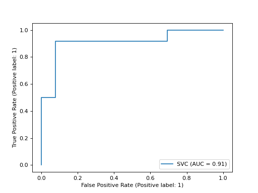

sklearn.metrics.plot_roc_curve¶
- sklearn.metrics.plot_roc_curve(estimator, X, y, *, sample_weight=None, drop_intermediate=True, response_method='auto', name=None, ax=None, pos_label=None, **kwargs)[source]¶
DEPRECATED: Function
plot_roc_curveis deprecated in 1.0 and will be removed in 1.2. Use one of the class methods:sklearn.metrics.RocCurveDisplay.from_predictionsorsklearn.metrics.RocCurveDisplay.from_estimator.Plot Receiver operating characteristic (ROC) curve.
Extra keyword arguments will be passed to matplotlib’s
plot.Read more in the User Guide.
- Parameters:
- estimatorestimator instance
Fitted classifier or a fitted
Pipelinein which the last estimator is a classifier.- X{array-like, sparse matrix} of shape (n_samples, n_features)
Input values.
- yarray-like of shape (n_samples,)
Target values.
- sample_weightarray-like of shape (n_samples,), default=None
Sample weights.
- drop_intermediatebool, default=True
Whether to drop some suboptimal thresholds which would not appear on a plotted ROC curve. This is useful in order to create lighter ROC curves.
- response_method{‘predict_proba’, ‘decision_function’, ‘auto’} default=’auto’
Specifies whether to use predict_proba or decision_function as the target response. If set to ‘auto’, predict_proba is tried first and if it does not exist decision_function is tried next.
- namestr, default=None
Name of ROC Curve for labeling. If
None, use the name of the estimator.- axmatplotlib axes, default=None
Axes object to plot on. If
None, a new figure and axes is created.- pos_labelstr or int, default=None
The class considered as the positive class when computing the roc auc metrics. By default,
estimators.classes_[1]is considered as the positive class.- **kwargsdict
Additional keywords arguments passed to matplotlib
plotfunction.New in version 0.24.
- Returns:
- display
RocCurveDisplay Object that stores computed values.
- display
See also
roc_curveCompute Receiver operating characteristic (ROC) curve.
RocCurveDisplay.from_estimatorROC Curve visualization given an estimator and some data.
RocCurveDisplay.from_predictionsROC Curve visualisation given the true and predicted values.
roc_auc_scoreCompute the area under the ROC curve.
Examples
>>> import matplotlib.pyplot as plt >>> from sklearn import datasets, metrics, model_selection, svm >>> X, y = datasets.make_classification(random_state=0) >>> X_train, X_test, y_train, y_test = model_selection.train_test_split( ... X, y, random_state=0) >>> clf = svm.SVC(random_state=0) >>> clf.fit(X_train, y_train) SVC(random_state=0) >>> metrics.plot_roc_curve(clf, X_test, y_test) <...> >>> plt.show()
